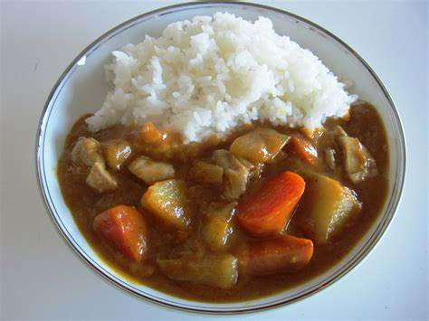

4.8/5 Stars on www.allrecipes.com I live in Japan, so this one is such a hardcore jam.I want to try this recipe sometime. "Curry has always been a passion of mine, especially Japanese Curry. After years of searching I have discovered the perfect Japanese Curry. Many of these spices can be found at your local Asian, Hispanic, or Middle Eastern markets, or substituted with S&B® Oriental Curry Powder. Well worth the effort - your family will love this! Serve over steamed rice or noodles."
Combine coriander seeds, fenugreek seeds, cumin seeds, cardamom pods, and fennel seeds in a large skillet over low heat; toast until lightly golden, 1 to 2 minutes. Add cloves, star anise, and cinnamon sticks; toast until fragrant, 1 to 2 minutes. Remove seeds from cardamom pods and return to the skillet, discarding pods.
Transfer toasted spice mixture to a spice grinder or blender. Add turmeric, white peppercorns, black peppercorns, allspice, and nutmeg; grind into a fine curry powder.
Melt 3/4 cup butter in a saucepan over medium heat. Whisk in flour and cook until golden brown, 30 to 45 seconds. Stir in 4 tablespoons of the curry powder, Worcestershire sauce, and tomato paste. Remove from heat.
Melt 1/2 cup butter in a large pot over low heat. Add onions; cook and stir until golden brown, 30 to 45 minutes. Increase heat to high; add 2 tablespoons curry powder, chicken, garlic, ginger, soy sauce, and salt. Saute until chicken is browned, about 5 minutes. Add chicken broth and bouillon cubes; bring curry to a boil.
Stir carrots into the pot; cook until tender, about 5 minutes. Add potatoes; cook until tender, about 5 minutes. Stir in green bell peppers and apples. Cook until soft, about 10 minutes. Stir in curry paste and simmer until sauce thickens and flavors combine, about 5 minutes.
Per Serving: 599 calories; protein 28.7g; carbohydrates 51.3g; fat 32.3g; cholesterol 134.8mg; sodium 1045.4mg.